COCO
Lecture 14 Géron Ch. 12
Applications of Machine Learning
BSc Mathematics of Artificial Intelligence · Third year
Three lectures of vision, and every one of them answers the same question: what is in this image?
Today the output stops being a label and becomes a set of boxes — which means the first thing we need is a new notion of what a correct answer is. That is the derivation.
| Classification | Detection | |
|---|---|---|
| Question | what is in this picture | what is where, and how many |
| Output | one vector, length $K$ | three arrays, length $N$ |
| $N$ is | fixed before you look | decided by the image and by two cut-offs |
| Wanted from pooling | invariance | equivariance |
The last row is Lecture 12 with a consequence. A network that has learned to not care where the object is cannot tell you where it is.
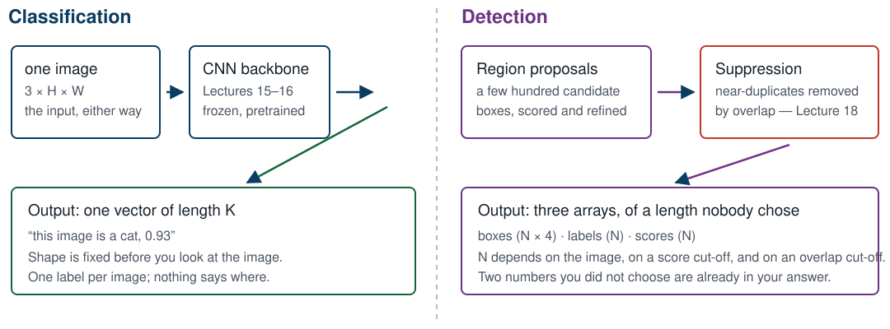
Two numbers you did not choose are already inside the answer on the right: a score cut-off and an overlap cut-off.
Four numbers. Which four is not agreed on, and that is the first bug.
| Convention | Meaning | Used by |
|---|---|---|
[x1, y1, x2, y2] | two opposite corners | torchvision, and everything today |
[x, y, w, h] | top-left corner, then size | the COCO annotation file |
[cx, cy, w, h] | centre, then size | YOLO-family papers |
[x, y, w, h] and torchvision expects corners. Read
[100, 50, 20, 30] as corners and every box wider than its own
left edge gets $x_2 < x_1$ — almost all of them, with no error.
Convert once, at the edge of the program, and assert
$x_2 \geq x_1$ and $y_2 \geq y_1$; nothing else will catch it.
images, out of 5,000 in
val2017
Every number in this lecture is measured on 128 images. When we say a score, we say the sample size beside it.
Measured on one run of this lecture’s notebook; hardware, library versions and random seeds can make a re-run differ slightly.
| Quantity | Value |
|---|---|
| Images | 128 |
| Annotated objects, crowd regions excluded | 898 |
| Crowd regions, dropped | 8 |
| Distinct categories appearing | 73 of 80 |
| Objects per image — mean | 7.02 |
| Objects per image — median | 5 |
| Objects per image — range | 1 to 29 |
Mean 7.02 against median 5: the distribution has a long right tail, and one image alone carries 29 objects.
Measured on one run of this lecture’s notebook; hardware, library versions and random seeds can make a re-run differ slightly.
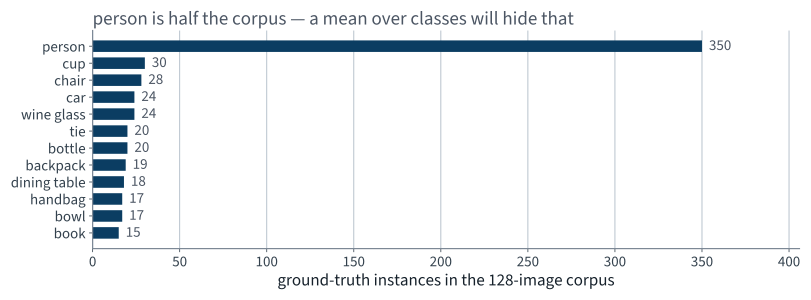
39.0% of every annotated object in this corpus is a person. Remember that when we start averaging over categories.
Measured on one run of this lecture’s notebook; hardware, library versions and random seeds can make a re-run differ slightly.
Use $1 - \mathrm{IoU}$ as a loss. Fix one $100 \times 100$ box, slide a second one right by $d$ pixels, and ask autograd for the gradient.
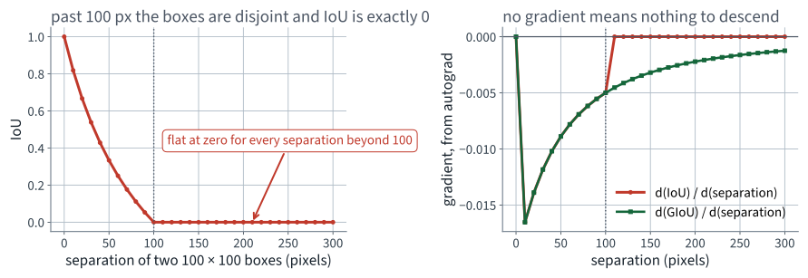
Once the boxes are disjoint the intersection is clamped at zero, so IoU is constant: gradient exactly $0$, not merely small.
Let $C$ be the smallest axis-aligned box containing both $A$ and $B$.
Rank one class’s detections by score. Each is a true positive if its IoU with a still-unmatched annotation is at least $t$. AP is the area under the running maximum of precision, $p_{\text{env}}(r) = \max_{\tilde r \geq r} p(\tilde r)$.
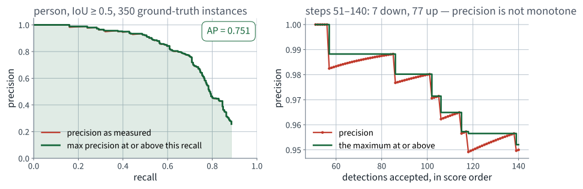
Precision is not monotone (right: 7 steps down and 77 up, in 90), as Lecture 3 proved; the maximum is what repairs it.
person with 350That choice — which classes are in the mean — is a decision, it changes the number, and papers do not always say which one they made.
Measured on one run of this lecture’s notebook; hardware, library versions and random seeds can make a re-run differ slightly.
| Input | 128 JPEG files and one COCO annotation file |
|---|---|
| Output | per image: boxes in corner form, category ids, scores; plus one integer count |
| Constraint | nothing is trained; the pretrained weights are used as they ship |
| Check | every predicted box lies inside the image; scores are non-increasing; the count equals the number of boxes kept |
The Check row is the one people skip, and it is the one that catches a corner-versus-size mix-up in one line.
Measured on one run of this lecture’s notebook; hardware, library versions and random seeds can make a re-run differ slightly.
import torch
from torchvision.models.detection import (
fasterrcnn_resnet50_fpn, FasterRCNN_ResNet50_FPN_Weights)
weights = FasterRCNN_ResNet50_FPN_Weights.COCO_V1
model = fasterrcnn_resnet50_fpn(weights=weights)
model.eval().to(DEVICE) # eval(), every time
preprocess = weights.transforms()
print(len(weights.meta["categories"]), "label slots")
print(weights.meta["_metrics"])model.eval() is in the silent-failure catalogue
from Lecture 10. Here it changes the batch-norm statistics inside a frozen
ResNet, and nothing raises.
Non-examinable: the torchvision weights API.
from PIL import Image
preds = {}
with torch.inference_mode(): # no graph, no gradients
for im in images:
img = Image.open(IMG_DIR / im["file_name"]).convert("RGB")
out = model([preprocess(img).to(DEVICE)])[0]
preds[im["id"]] = {k: v.cpu().numpy() for k, v in out.items()}
assert len(preds) == 128Measured: about 40 seconds on an Apple Silicon laptop with the MPS backend — 0.31 s per image, on the machine that made these slides. Your runtime will measure its own; no output does not mean it has hung.
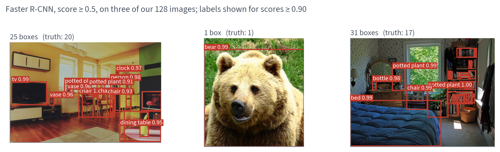
The bear is right. The two rooms have more boxes than there are objects, and you can see which ones are wrong without being able to say how wrong.
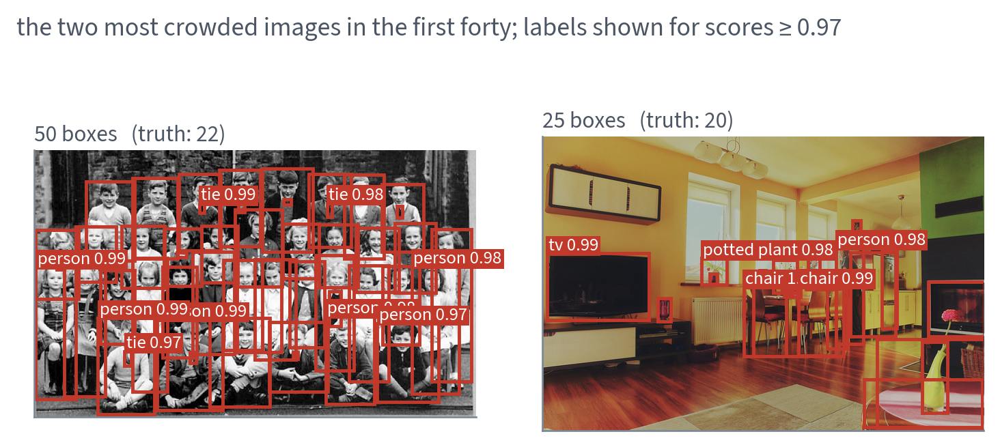
Fifty boxes for twenty-two objects. Several children carry two or three, and nothing says which is the good one.
box_score_thresh defaults to 0.05:
anything below is never returned at allbox_nms_thresh defaults to 0.5: near
duplicates are already removed before you see thembox_detections_per_img defaults to
100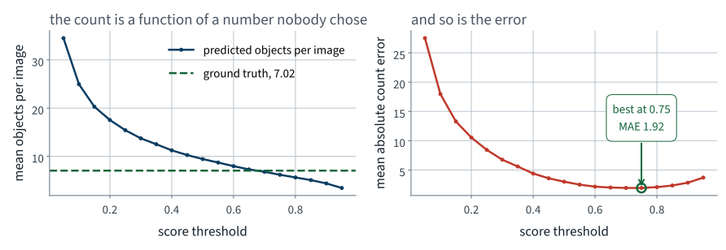
Nothing in the model chose 0.5. Move the cut-off and the answer to the stakeholder’s question changes by a factor of ten.
The minimum of the right-hand panel is at 0.75, with MAE 1.92. Adopting that would be choosing a hyperparameter on the same data you then report — Lecture 2's error, in a new costume. We will quote it as a diagnostic and not as a result.
Measured on one run of this lecture’s notebook; hardware, library versions and random seeds can make a re-run differ slightly.
THRESH = 0.5
n_pred = np.array([int((preds[im["id"]]["scores"] >= THRESH).sum())
for im in images])
n_true = np.array([len(gt[im["id"]]["labels"]) for im in images])
assert n_pred.shape == n_true.shape == (128,)
mae = np.abs(n_pred - n_true).mean()
bias = (n_pred - n_true).mean()
print(f"count MAE {mae:.2f}")
print(f"signed {bias:+.2f} (positive = too many boxes)")Two numbers, not one. The absolute error says how far off; the signed error says which way.
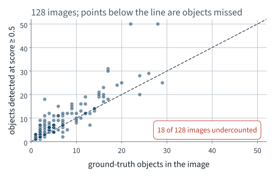
The cloud sits above the diagonal: the failure mode is too many boxes, not too few.
| At score $\geq 0.5$ | Value |
|---|---|
| Count MAE | 3.00 |
| Signed count error | +2.41 |
| Images counted exactly right | 27 of 128 |
| Images with too many boxes | 83 |
| Images with too few | 18 |
| Boxes kept in total | 1,206 |
3.00 against a baseline of 6.02. The model halves the error of a system that never looks at the image.
Measured on one run of this lecture’s notebook; hardware, library versions and random seeds can make a re-run differ slightly.
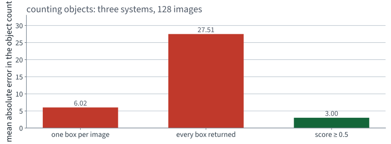
The middle bar is the same model with one line deleted, and it is four times worse than predicting nothing at all.
We derived AP on these slides and implemented it ourselves. That is exactly the situation in which a result should not be believed.
| mAP on our 128 images | Ours | Reference evaluator |
|---|---|---|
| at IoU 0.50 | 0.659 | 0.660 |
| at IoU 0.75 | 0.475 | 0.476 |
| averaged 0.50 to 0.95 | 0.439 | 0.440 |
Largest disagreement: 0.0014. The reference is the official COCO evaluator, run on the same predictions and the same annotations, by a library we did not write.
Non-examinable: the reference library. Examinable: that you check an implementation against one.
Measured on one run of this lecture’s notebook; hardware, library versions and random seeds can make a re-run differ slightly.
| mAP, averaged 0.50 to 0.95 | Value | Images |
|---|---|---|
| Ours | 43.9 | 128 |
| Reported by torchvision for these Faster R-CNN weights | 37.0 | 5,000 |
Our number is 6.9 points higher, and the model is identical.
Nothing about the detector changed. The difference is the sample: 128 images, of which many are easy, and 73 classes several of which have a single instance that happened to be found. This is what a small evaluation set does, and it does it in the flattering direction more often than not.
Measured on one run of this lecture’s notebook; hardware, library versions and random seeds can make a re-run differ slightly.
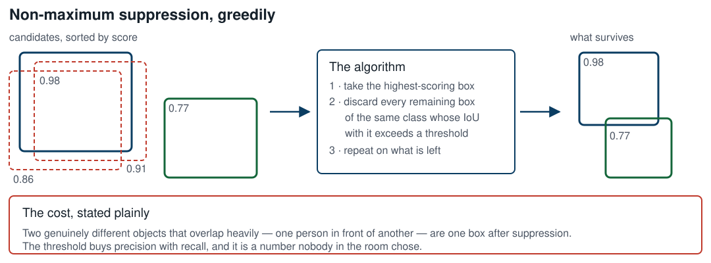
The box_nms_thresh of Step 5. Greedy, per
class, and it deletes information that cannot be recovered afterwards.
from torchvision.ops import batched_nms
keep = batched_nms(torch.tensor(boxes), # (N, 4), corners
torch.tensor(scores), # (N,)
torch.tensor(labels), # (N,) — per class
iou_threshold=0.5)
assert len(keep) <= len(boxes), "suppression cannot add boxes"
boxes, scores, labels = boxes[keep], scores[keep], labels[keep]batched_nms rather than nms: a
bottle overlapping a glass must not suppress it, because they are different
classes and both are true.
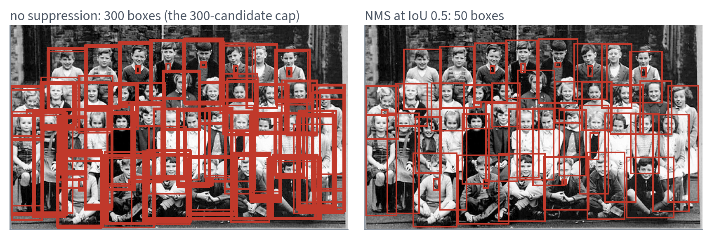
Same model, same image, same score threshold. The only difference is one IoU comparison between pairs of boxes.
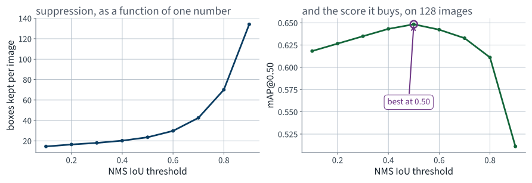
The default of 0.5 happens to be near the best value on our corpus. That is a fact about this corpus, not a law.
A box was always an approximation: a bicycle’s box is mostly not bicycle, and for a picking arm “somewhere in this rectangle” may not be good enough.
person region. You
cannot count themfrom torchvision.models.detection import (
maskrcnn_resnet50_fpn, MaskRCNN_ResNet50_FPN_Weights)
model = maskrcnn_resnet50_fpn(
weights=MaskRCNN_ResNet50_FPN_Weights.COCO_V1).eval().to(DEVICE)
out = model([preprocess(img).to(DEVICE)])[0]
print(out["masks"].shape) # (N, 1, H, W), soft masks in [0, 1]A mask is harder than a box, which is what those two numbers say. We do not measure mask AP on our corpus; the pixel-level annotations are in the file and the code is an exercise.
Measured on one run of this lecture’s notebook; hardware, library versions and random seeds can make a re-run differ slightly.
Measured on one run of this lecture’s notebook; hardware, library versions and random seeds can make a re-run differ slightly.
Measured on one run of this lecture’s notebook; hardware, library versions and random seeds can make a re-run differ slightly.
Not presented — for afterwards
five, in the style of the written paper
Solutions on Lecture 15’s deck.
Measured on one run of this lecture’s notebook; hardware, library versions and random seeds can make a re-run differ slightly.
Solutions on Lecture 15’s deck.
Measured on one run of this lecture’s notebook; hardware, library versions and random seeds can make a re-run differ slightly.
The five set at the end of Lecture 13
not part of this lecture
1. State the order in which a pretrained network’s head must be replaced and its body frozen, and what…
Freeze first, then replace. In the other order the new head is frozen too.
requires_grad=True, so the freezing loop would turn it off2. Fine-tuning uses $10^{-4}$ on the pretrained block and $10^{-3}$ on the new head. Justify the difference in…
The block already encodes something and the head starts from noise; one rate cannot suit both.
3. Freezing a batch-norm layer’s weights does not freeze the layer. State what still changes, and the call…
The running statistics are buffers, updated in the forward pass; .eval() stops them.
requires_grad=False governs gradients, not buffers4. An augmented validation loader is used to select the epoch to keep. State the two things this costs, and the…
The score becomes a random variable and the chosen epoch can change. Evaluate twice and require identical answers.
5. A frozen-backbone probe is both more accurate and faster than training from scratch on 1,020 images. Explain…
The backbone is a fitted function reused for free; the feature extraction pass must still be counted in the total.
Lecture 15 · Géron Ch. 13
Weak stationarity and differencing, on a real daily series
Why copying last week is hard to beat, and why a random split is invalid
on autocorrelated data
Backtesting on a rolling origin, and a linear model on eight weeks of lags
Run the Lecture 14 notebook first